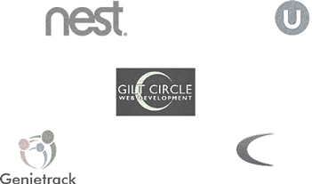

D Molchan|

Front-End QA Engineer.
It's all about testing
& pixel perfection.
__
Pixel perfect design is something of a lost art, you know. Mostly because it's an incredibly laborious and long work; it's a technique that requires dedication, effort and an almost obsessive level of attention to detail and not many designers are cut out for it.
Experience
__
I first started doing QA back in my native country Belarus. I was hired by an amazing company [name], where I spent almost 2 years before moving to US.
Gilt Circle WD was a small design studio in the sunshine state gave me so much(I fell in love with front-end technologies and testing). After a year there I've decided to move to Sillicon Valley to try something bigger. And here I am...
